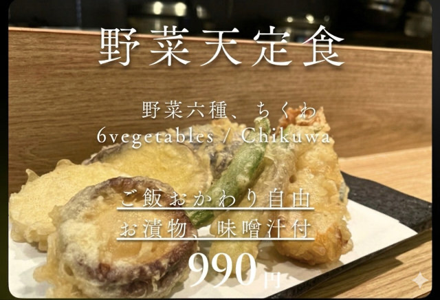
野菜六種、ちくわ
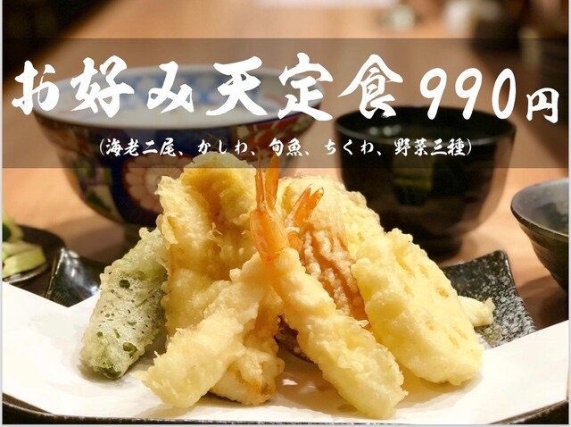
野菜三種、ちくわ、かしわ、白身魚、エビ2尾
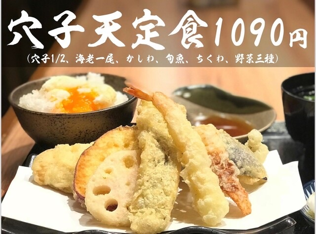
野菜三種、ちくわ、かしわ、白身魚、エビ1尾、穴子ハーフ1本
ご飯、味噌汁は付きません
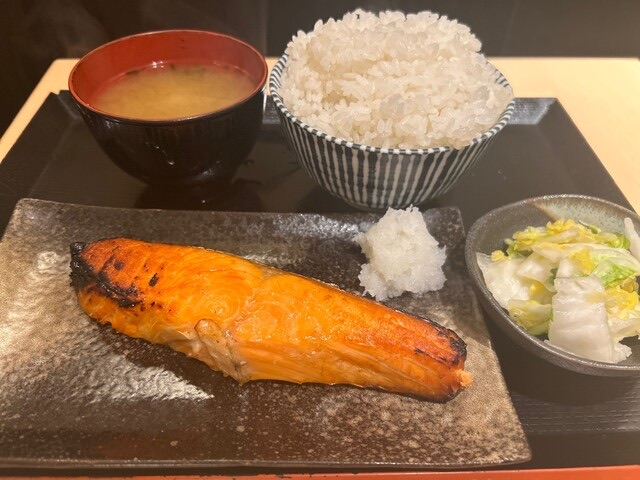
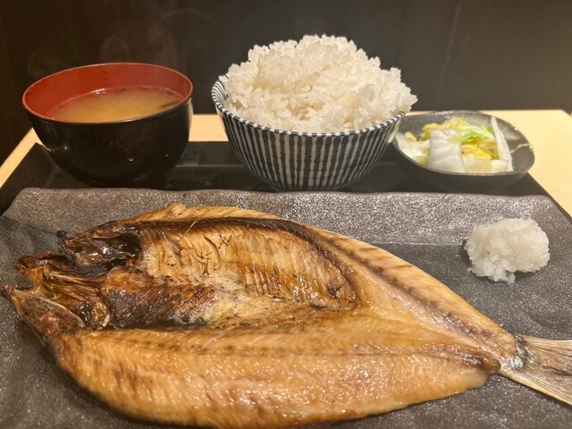
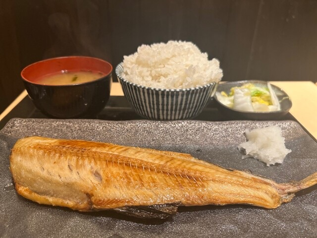

うどん始めました！暑い夏に冷たいうどんお召し上がりください！！
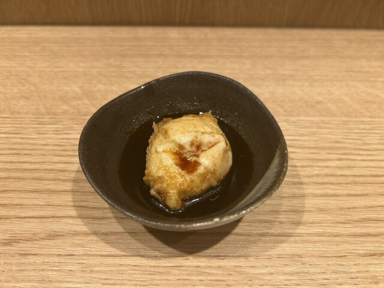
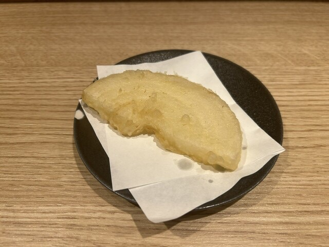
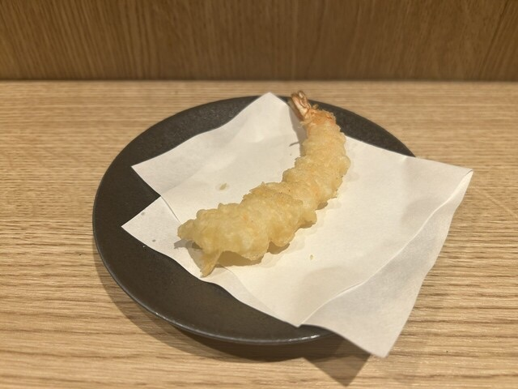
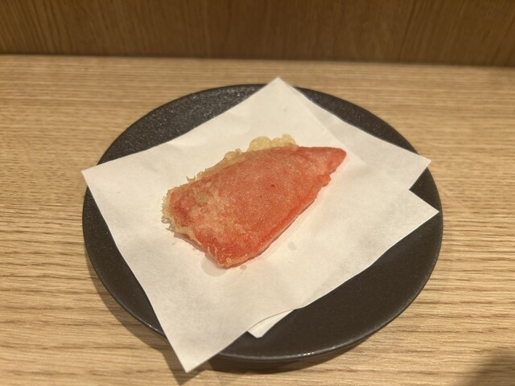
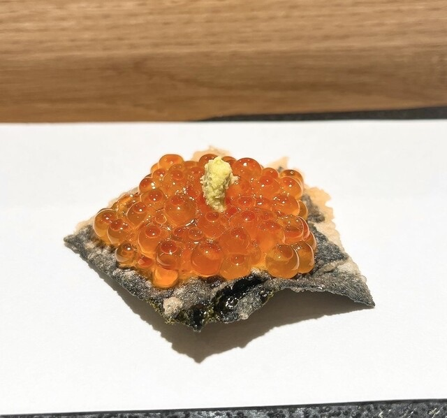

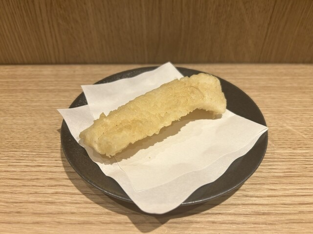
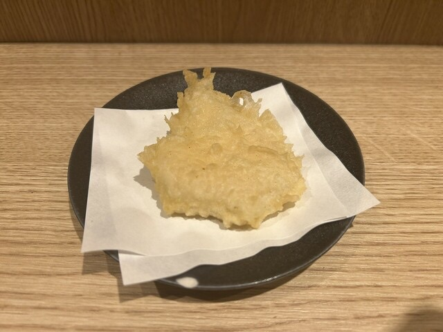


脂の乗った香ばしい銀鮭とキノコに、贅沢な5種のチーズソースを掛けました。
ブルーチーズのクセと風味がしっかり残る、お酒（ワインや日本酒）が進む大人の一品です。

1人前から◎迷ったら人数分がおすすめ！
秋のおしながき…[海老・秋刀魚・まいたけ・れんこん]
（写真は一例です。仕入れにより変動する場合がございます。）
日〜木曜日ディナータイム限定
祝前日を除く
・ドリンク1杯
・小鉢1品
・天ぷら3品
仕入れ状況によって内容が変わります。

Salmon roe canapé

Pickled radish with Fatty tuna
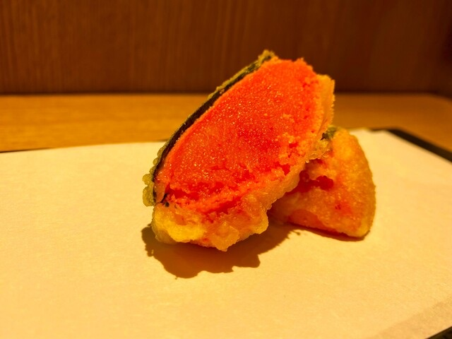
Spicy Cod Roe

Crest Squid
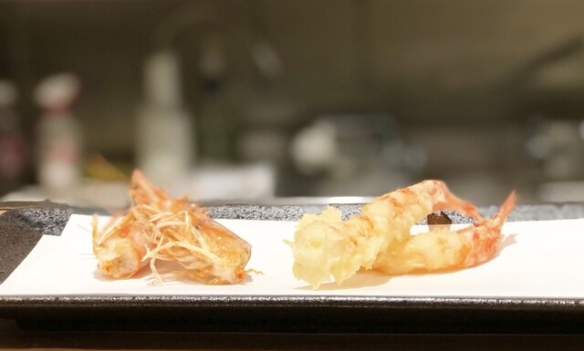
Shrimp
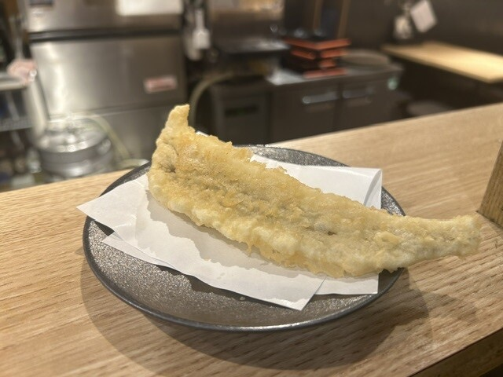
Conger eel


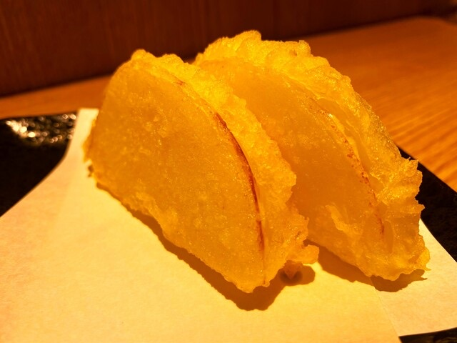
Onion

Thick sliced sweet Potato
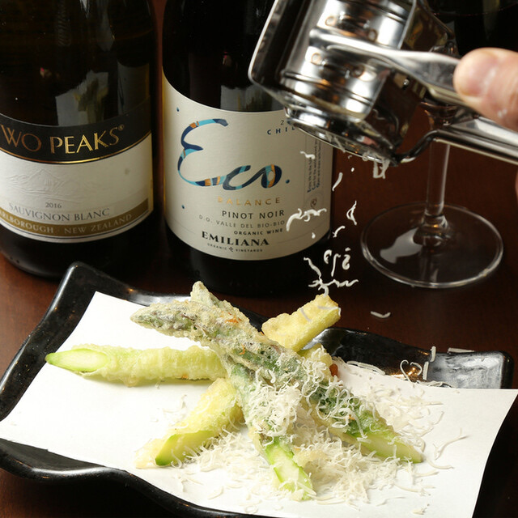
Asparagus
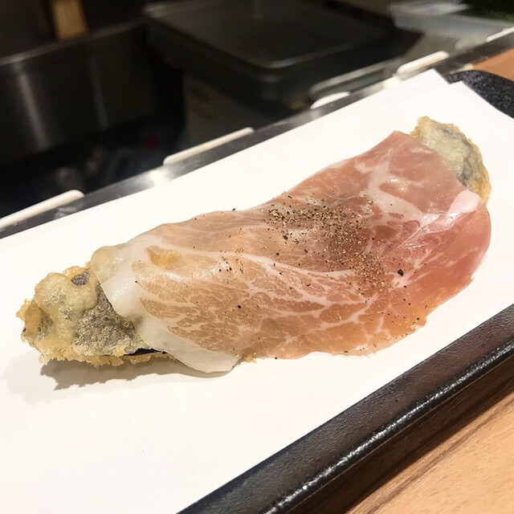
Eggplant wrapped with Prosciutto Ham
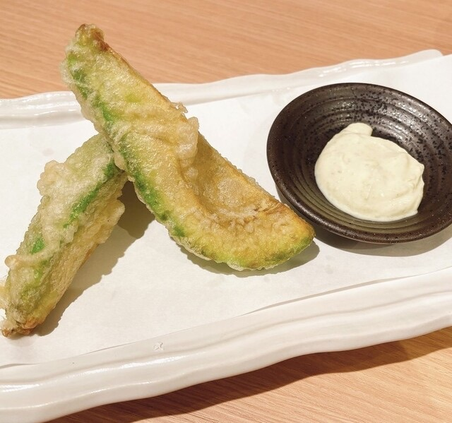
Avocado with Wasabi mayonnaise


Shrimp Tempura Roll
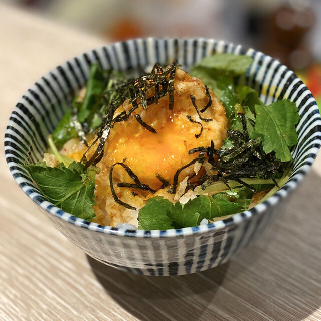
Soft boiled eggs on the rice
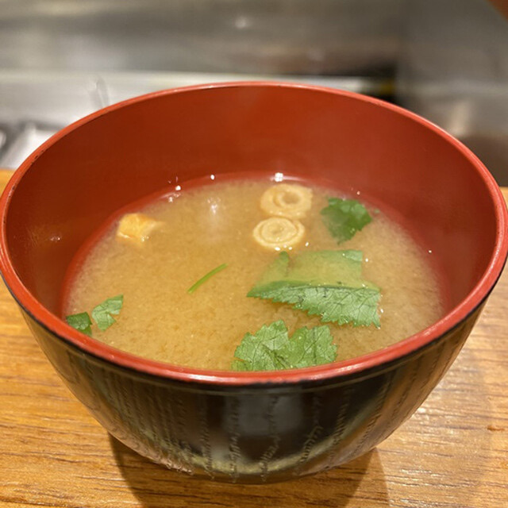
Miso Soup
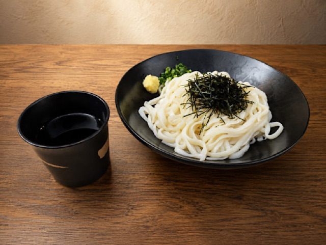
※写真は1人前になります。


Lemon sour
こちらから種類をお選びください。

Sangria White
こちらから種類をお選びください。
※ノンアルコールドリンクです。
こちらから種類をお選びください。
Cola

Oolong tea